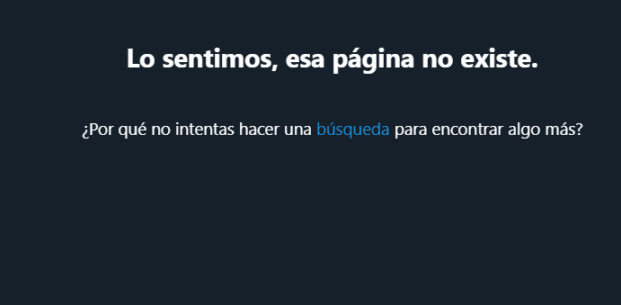
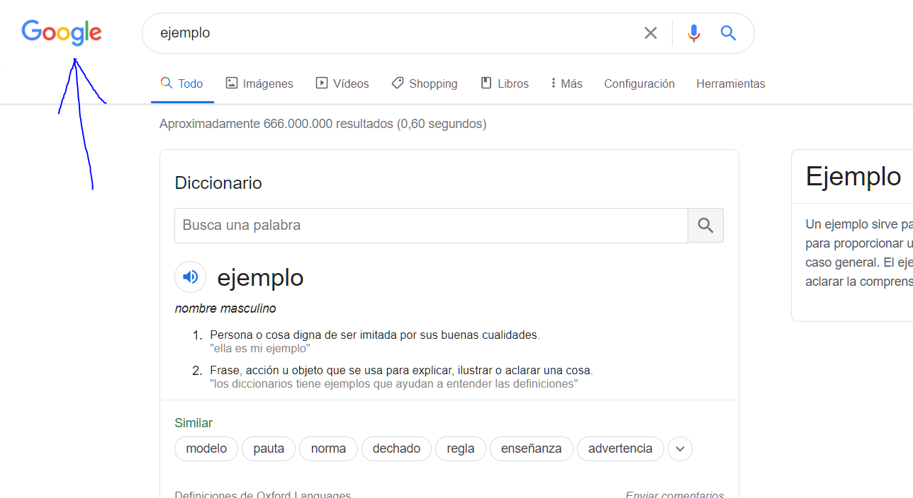
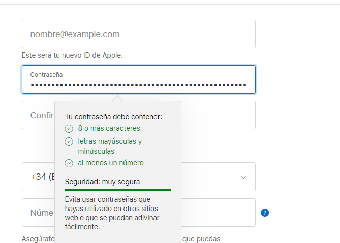
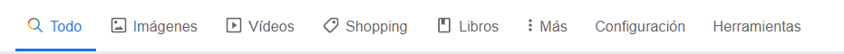
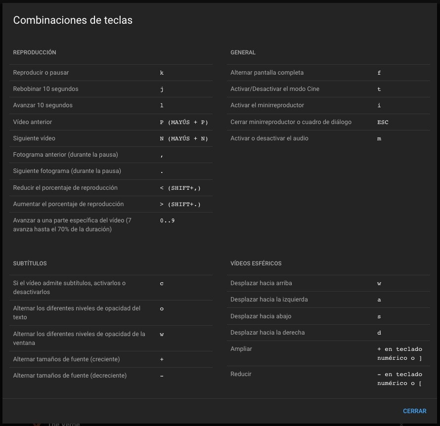
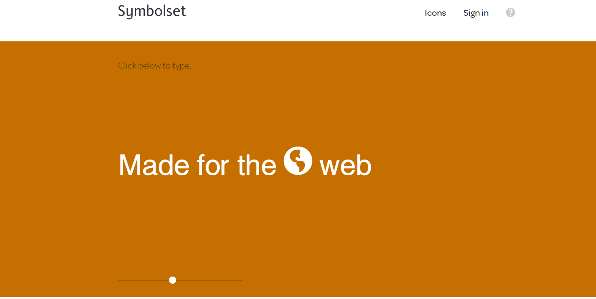
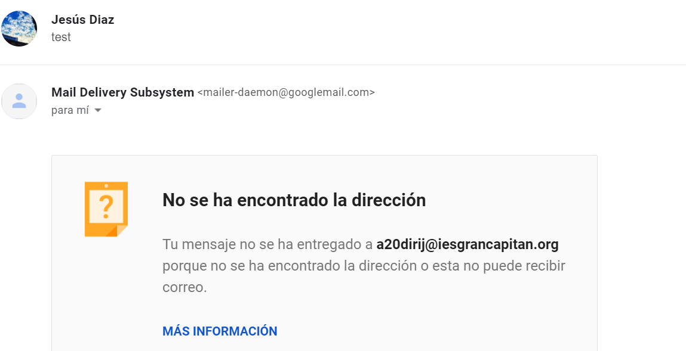
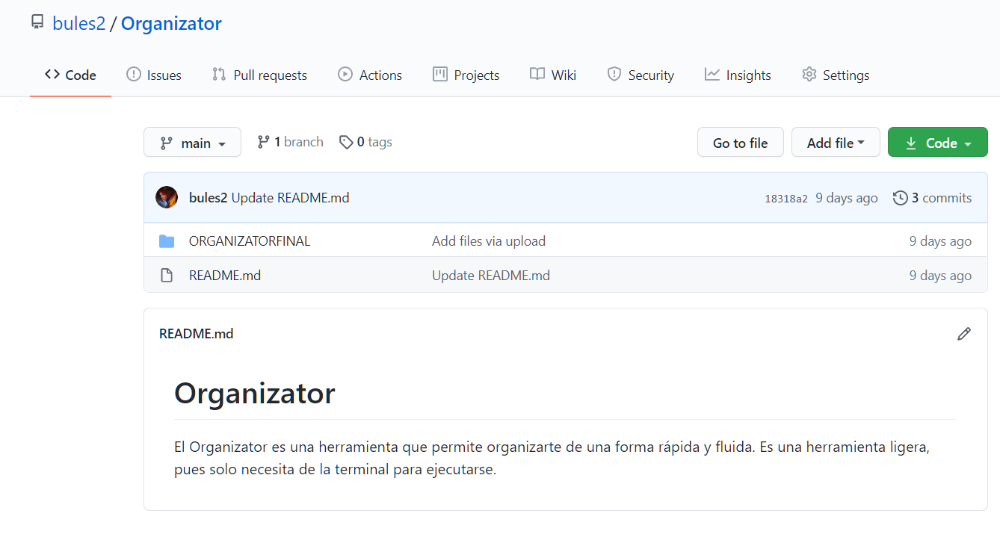

| 0. Introducción: ¿Qué es un sitio web usable? |
Aquel en el que los usuarios pueden interactuar de la forma más fácil,
cómoda, segura e inteligentemente posible. |
| 1. Visibilidad del estado del sistema |
El usuario debe saber que está pasando |
Ejemplo
|
Un minijuego en la pantalla de carga: |
| 2. Adecuación entre el sistema y el mundo real. |
El sitio web o aplicación tiene que utilizar el lenguaje del usuario, con expresiones
y palabras que le resulten familiares. Además la información
debe aparecer en un orden lógico y natural. |
Ejemplo
|
El error 404 de twitter te muestra "Página no encontrada", el usuario no tiene por qué saber cuál es el
error 404
 |
| 3. Libertad y control por el usuario. |
En caso de elegir alguna opción del sitio web por error,
el usuario agradecerá disponer de una “salida de emergencia”
para abandonar el estado no deseado en que se halla. Debe poder deshacer
o repetir una acción previamente realizada.
|
Ejemplo
|
Si nos arrepentimos de enviar un email en gmail, podemos
cancelar su envío en los próximos segundos: |
| 4. Consistencia y estándares. |
Es importante establecer convenciones lógicas y mantenerlas siempre.
El usuario no tiene por qué saber que diferentes palabras, situaciones o acciones
significan lo mismo. |
Ejemplo
|
Por convención, el usuario puede volver a la página principal haciendo click en el logo superior
izquierdo en la mayoría de las páginas web:
 |
| 5. Prevención de errores. |
Ayuda al usuario a que no caiga en un error. |
Ejemplo
|
Ayuda a la hora de establecer tu contraseña o introducir tu correo:
 |
| 6. Reconocer mejor que recordar. |
Debemos hacer visibles acciones y opciones para que el usuario no tenga que recordar información entre
distintas secciones o partes del sitio web o aplicación. |
Ejemplo
|
Menú que muestra un icono con el texto para mostrar donde redirige dicho botón, de modo que no tenemos
que recordar
donde nos lleva cada icono:
 |
| 7. Flexibilidad y eficiencia de uso. |
Los aceleradores o atajos de teclado, por ejemplo, pueden hacer más rápida la interacción para usuarios
expertos, de tal forma que el sitio web o aplicación sea útil tanto para usuarios básicos como
avanzados.
(Incluir atajos de teclado en tu página) |
Ejemplo
|
En youtube podemos aumentar la velocidad de reproducción de un vídeo pulsando shift + . : |
| 8. Estética y diseño minimalista |
Las páginas no deben contener información innecesaria.
Cada información extra compite con la información relevante y disminuye su visibilidad. |
Ejemplo
|
Diseño de symbolset: |
| 9. Ayudar a los usuarios a reconocer, diagnosticar y solucionar los errores. |
Los mensajes de error se deben entregar en un lenguaje claro y simple,
indicando en forma precisa el problema y sugerir una solución constructiva al problema. |
Ejemplo
|
Cuando enviamos un correo a una dirección que no existe gmail nos notifica: |
| 10. Ayuda y documentación. |
Aunque es mejor que el sitio web o aplicación pueda ser usado sin ayuda, puede ser necesario proveer
cierto tipo de ayuda. En este caso, la ayuda debe ser fácil de localizar, especificar los pasos
necesarios y no ser muy extensa. (Un botón donde la ayuda esté remarcada)
Usabilidad:Atributo de calidad que mide lo fáciles que son de usar las interfaces web. |
Ejemplo
|
En la mayoría de repositorios github podemos encontrar el apartado README que explica cómo funciona el
programa:
 |